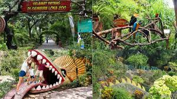

Agrowisata Bhumi Merapi
Lokasi : Jl. Kaliurang No.Km.20, Sawungan, Hargobinangun, Kec. Pakem, Kabupaten Sleman, Daerah Istimewa Yogyakarta 55582
Harga Tiket : Rp 25.000 - Rp 30.000
Maps

Gembira Loka Zoo
Gembira Loka Zoo
Lokasi : Jl. Veteran No.47, Muja Muju, Kec. Umbulharjo, Kota Yogyakarta, Daerah Istimewa Yogyakarta 55165
Harga Tiket : Rp 75.000
Maps
Harga Tiket : Rp 75.000
Maps

Mini Zoo Jogja Exotarium
Lokasi : Jl. Kabupaten No.99 Duwet, Duwet, Sendangadi, Kec. Mlati, Kabupaten Sleman, Daerah Istimewa Yogyakarta 55285
Harga Tiket : Rp 20.000 - Rp 25.000
Maps
Harga Tiket : Rp 20.000 - Rp 25.000
Maps